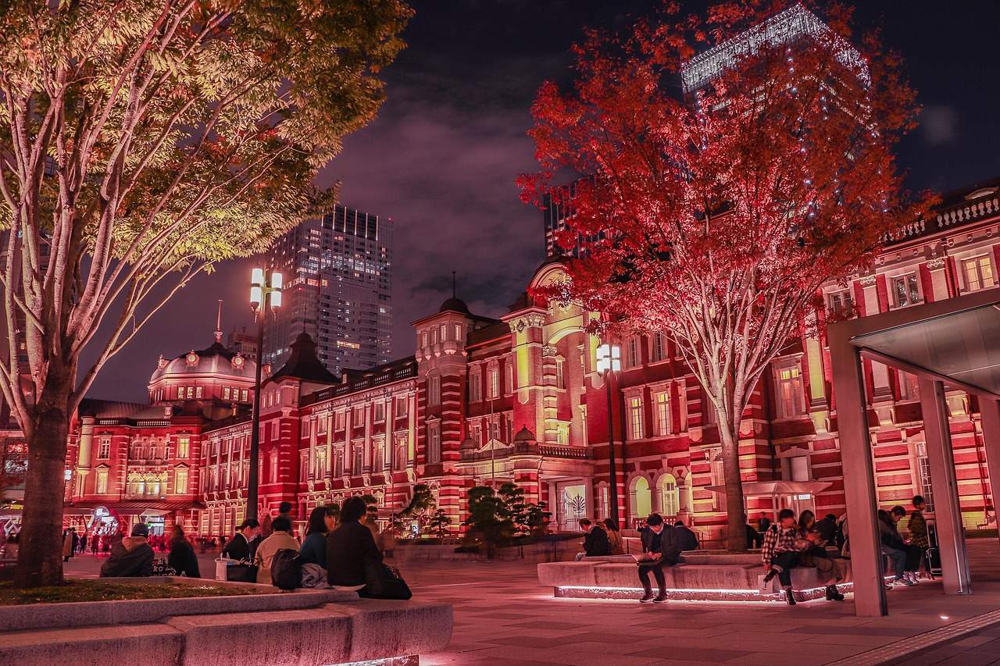
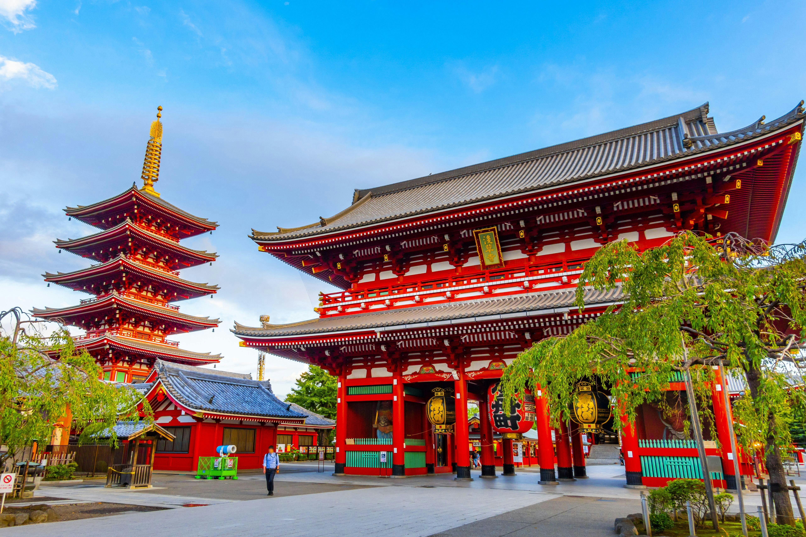
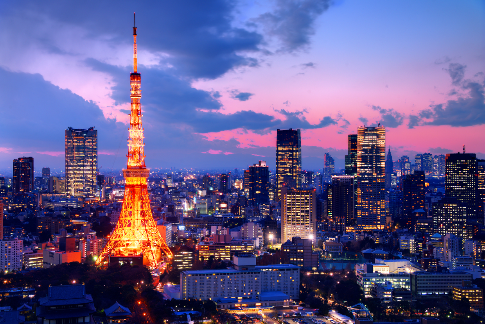

Tokyo Station



Tokyo Station is one of Japan’s busiest and most iconic train stations, located in the heart of Tokyo.
Opened in 1914, the station is famous for its beautiful red-brick Marunouchi Building, which blends Western-style architecture with Japanese precision.
It serves as a major transportation hub, connecting local trains, the Shinkansen (bullet trains), subways, and buses.
Inside, it’s also home to shopping malls, restaurants, and even luxury hotels.
Tokyo Station isn’t just a place to catch a train—it’s a destination in itself.